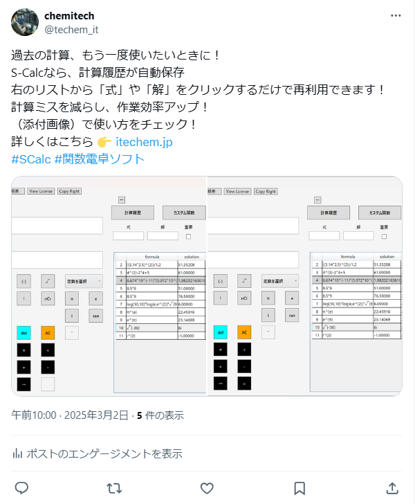
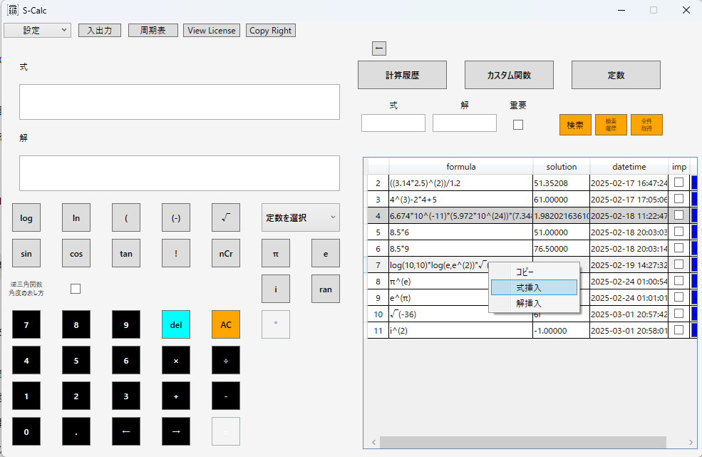
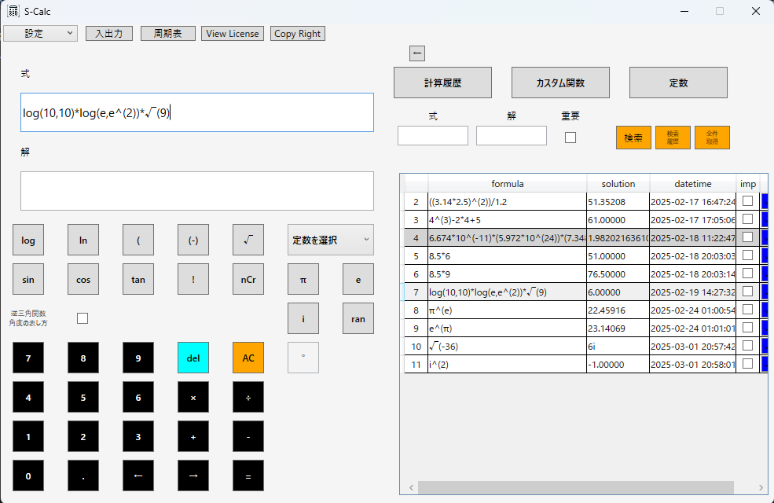
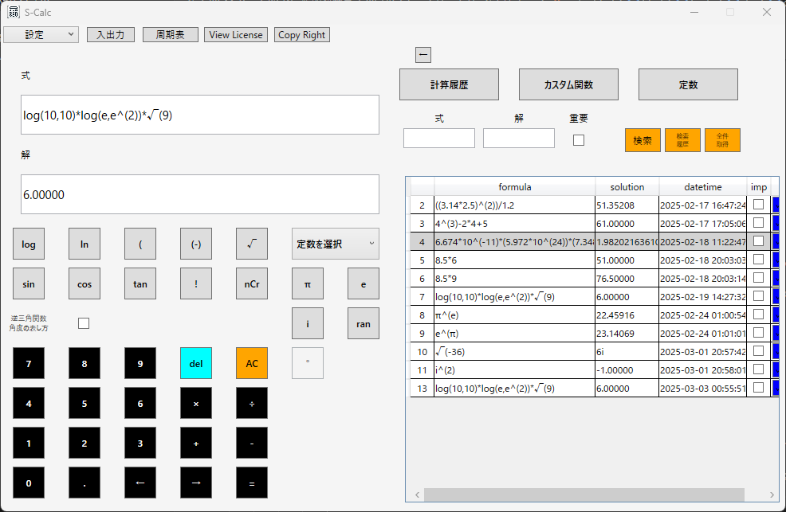
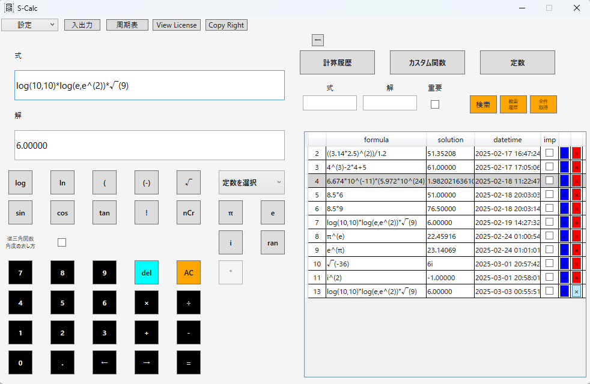
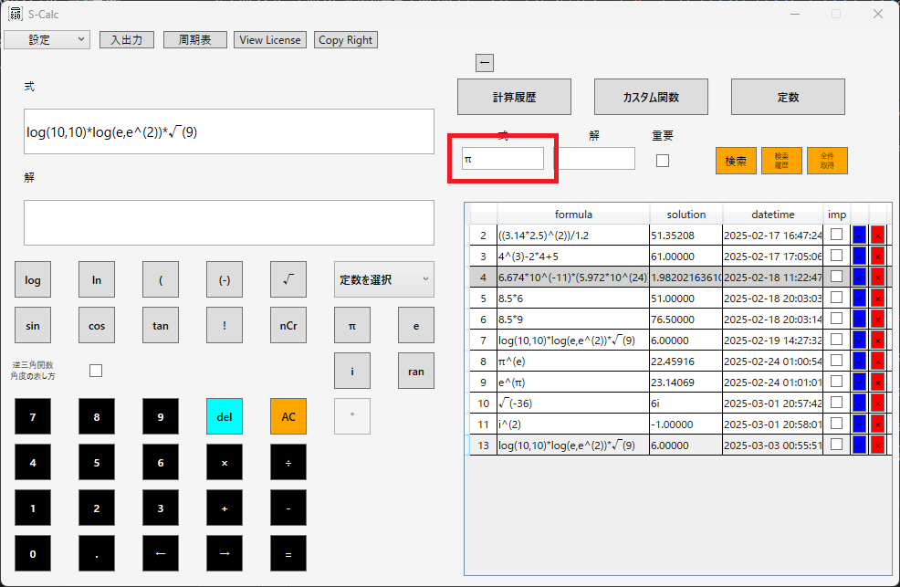
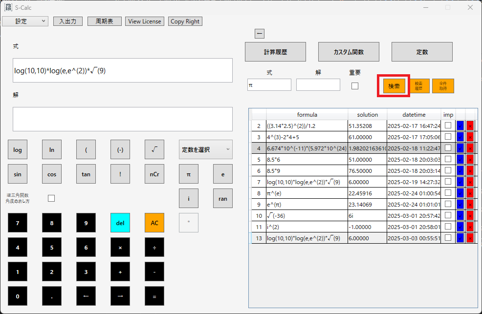
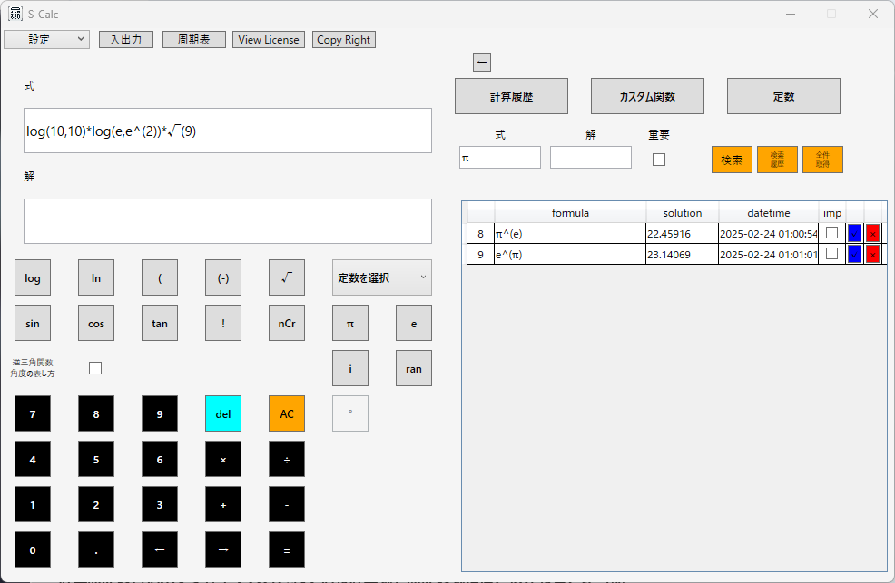
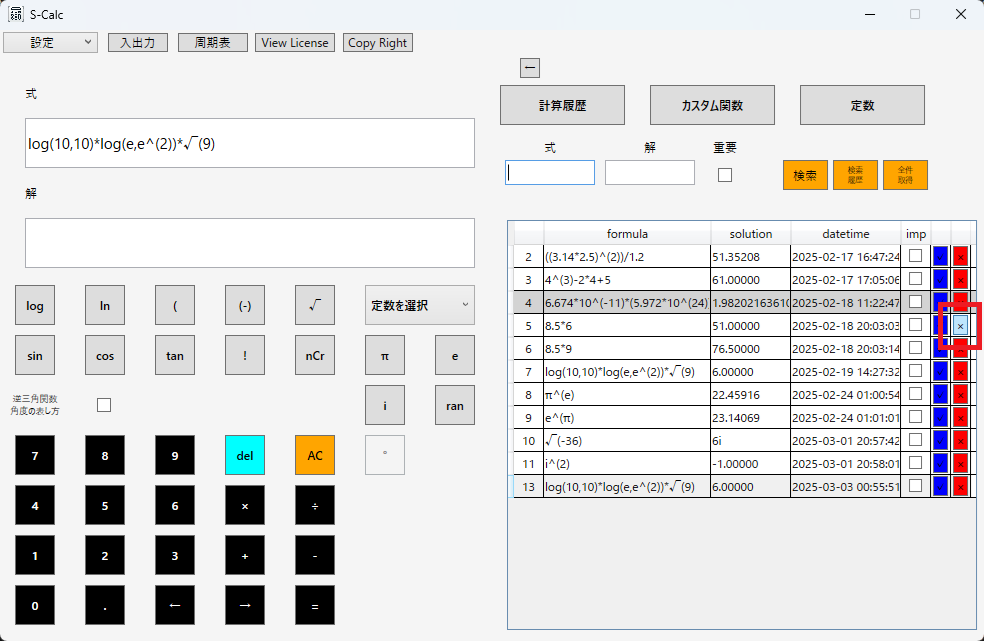
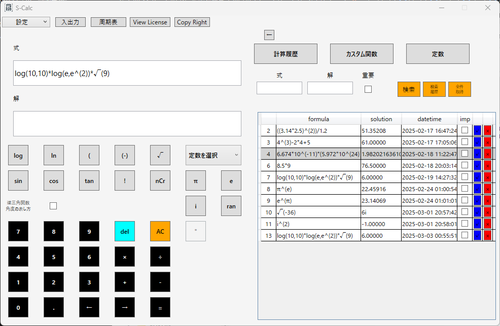

S-Calc 計算履歴の使い方
計算履歴とは？ 使い方 計算履歴の検索 計算履歴の削除計算履歴とは？
S-Calcでは、計算履歴が自動で保存され、いつでも過去の式と解を再利用できます。---

---
使い方
- 画面右のグリッド（リスト）から履歴を確認
- 使いたい式を右クリックして計算式に挿入
- 再計算が可能！

1.画面右のグリッド（リスト）から履歴を確認

2.履歴の式を計算式に挿入

3.等号（イコール）ボタンを押下することで計算実行！

計算履歴の青いボタン押下で入力されている計算式を履歴の式に置き換えることが可能
計算履歴の赤いボタンを押下することで計算履歴データを削除することが可能
画面トップに戻る計算履歴の検索


1.「式」「解」「重要」に検索したいパラメータを入力して検索ボタンを押下
「重要」はグリッド内の重要としたいデータの「imp」にチェックを入れることで検索対象とすることができます。

2.グリッドに検索した結果のデータを表示
画像では「π」を検索対象としておりますが、数字や記号も検索対象とすることが出来ます
画面トップに戻る計算履歴の削除

1.削除したい履歴の赤ボタンを押下

2.削除した履歴が表示されていないことを確認
画面トップに戻る